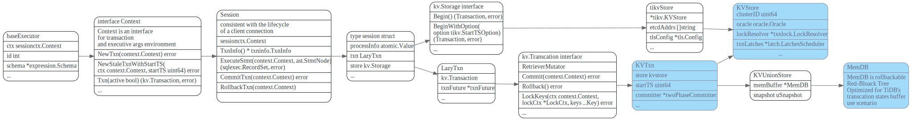
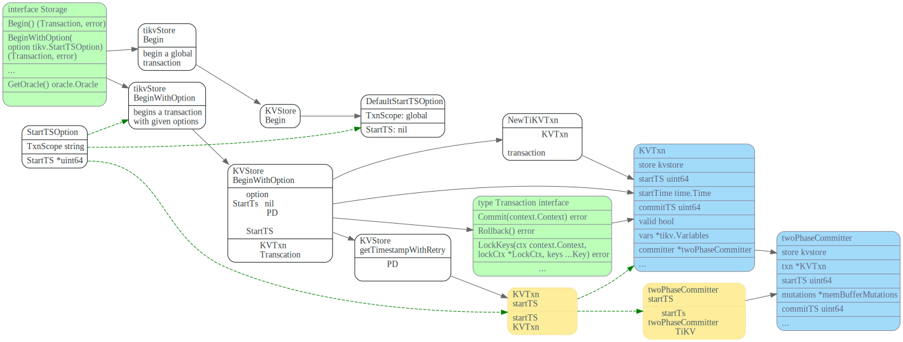
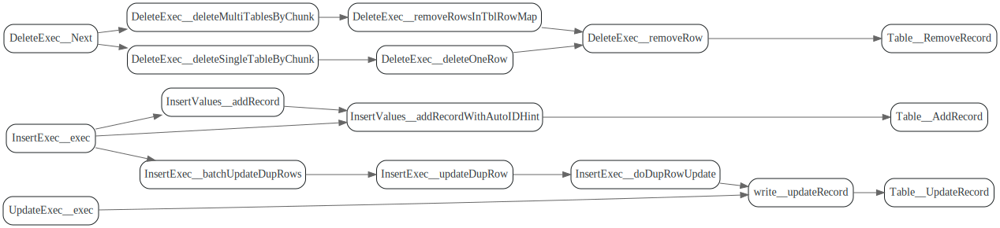
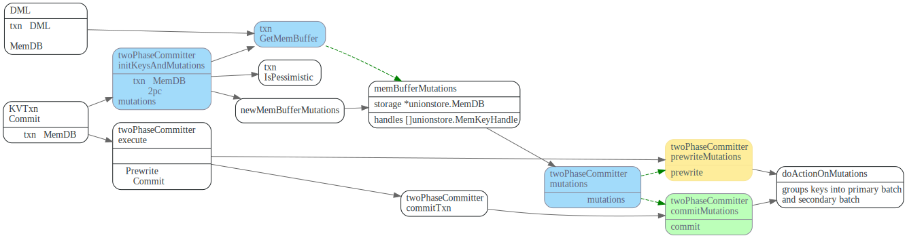
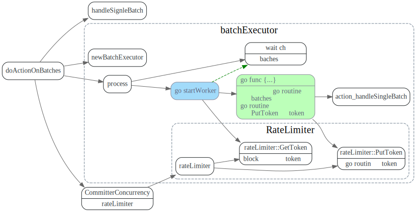
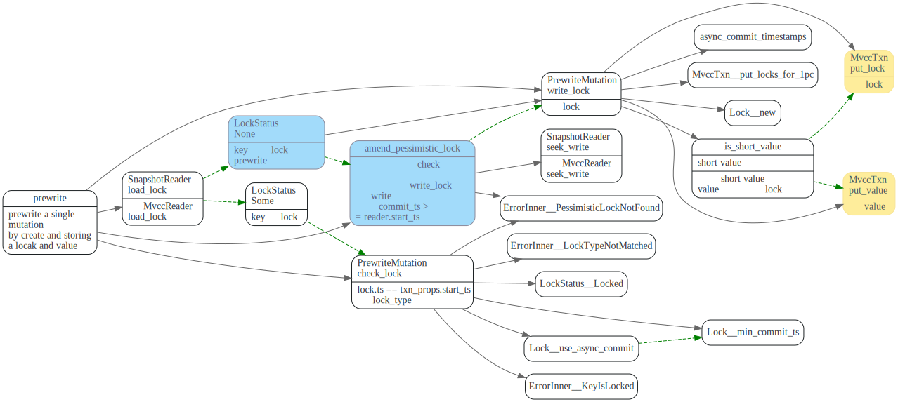
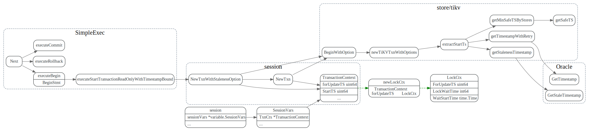
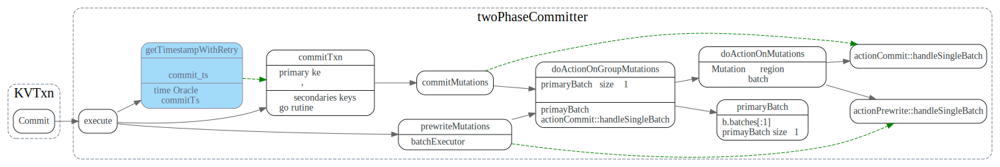

2pc
数据流程
TiDB中乐观事务提交流程如下(摘自TiDB 新特性漫谈：悲观事务)
- 首先Begin 操作会去TSO服务获取一个timestamp，作为事务的
startTS，同时startTs也是事务的唯一标识。 - DML阶段先KVTxn将写(Set, Delete)操作保存在
MemDB中。 - 2PC提交阶段在
KVTxn::Commit时创建twoPhaseCommitter, 并调用它的initKeysAndMutations遍历MemDB, 初始化memBufferMutations. - 在
twoPhaseCommitter::execute中，首先对memBufferMutations先按照region做分组，然后每个分组内，按照size limit分批。 - 每批mutations，调用对应的action的
handleSignleBatch，发送相应命令到TiKV.

Begin Transaction
每个client connection 对应着一个session, 事务相关数据的放在了session中， 它包含了对kv.Storage和Txn接口的引用。
kv.Storage接口定义了Begin/BeginWithOption接口，用来创建开始一个事务，它
主要实现者为KVStore。
kv.Transaction定义了事务的接口，txn可以commit/rollback.
它主要实现者为KVTxn。
每个KVTxn有个对MemDB的引用，每个事务的set/delete等修改会先存放到MemDB中。

kv.Storage的Begin/BeginWithOption 调用图如下：如果startTS为nil, 则会去TOS(timestamp oracle service)也就是 PD服务获取一个时间戳，作为事务的startTS，同时也是事务的唯一标识。

数据DML: 先保存到txn的MemDB
table row的增删改，最终会调用Table的AddRecord, RemoveRecord, UpdateRecord接口来更新数据。

而Table的这些接口，会将改动保存在Txn.KVUnionStore.MemDB中。

twoPhaseCommitter
像pecolator论文中描述的协议一样，两阶段提交步骤如下：
- 先Prewrite获取Lock, TiDB中可以并发的发起Prewrite请求.
- 去TSO 服务获取commit ts, 保证获取的
commit_ts比之前的事务的start_ts都大。 - commit primary key, 提交完primary key后，就可以返回给client，事务提交成功了。
- 其它剩下的keys由go routine在后台异步提交。
下图摘自[Async Commit 原理介绍][async-commit]

TiDB中会先根据region对MemDB中的keys做分组，然后每个分组内做分批，最后一批一批的向TiKV发请求。
mutations
上面保存在txn的MemDB中的修改，在txn commit时，会被转变为twoPhaseCommitter::mutations，在两阶段提交的
Prewrite/Commit阶段会提交这些mutations.

doActionOnMutations
// doActionOnMutations groups keys into primary batch and secondary batches, if primary batch exists in the key,
// it does action on primary batch first, then on secondary batches. If action is commit, secondary batches
// is done in background goroutine.
先调用groupMutations, 将mutations按照region分组，然后doActionOnGroupMutations对每个group分别做处理。

groupMutations: 按照region分组
先对mutations按照region分组，如果某个region的mutations 太多。 则会先发送CmdSplitRegion命令给TiKV, TiKV对那个region先做个split, 然后再开始提交， 这样避免对单个region too much write workload, 避免了不必要的重试。

doActionOnGroupMutations: 分批
doActionOnGroupMutations 会对每个group的mutations 做进一步的分批处理。 对于actionCommit做了特殊处理，如果是NormalCommit, primay Batch要先提交， 然后其他的batch可以新起一个go routine在后台异步提交。

关键代码如下：
func (c *twoPhaseCommitter) doActionOnGroupMutations(bo *Backoffer, action twoPhaseCommitAction, groups []groupedMutations) error {
// 1.每个分组内的再分批
for _, group := range groups {
batchBuilder.appendBatchMutationsBySize(group.region, group.mutations, sizeFunc, txnCommitBatchSize)
}
//2.commit先同步的提交primary key所在的batch
if firstIsPrimary &&
((actionIsCommit && !c.isAsyncCommit()) || actionIsCleanup || actionIsPessimiticLock) {
// primary should be committed(not async commit)/cleanup/pessimistically locked first
err = c.doActionOnBatches(bo, action, batchBuilder.primaryBatch())
//...
batchBuilder.forgetPrimary()
}
//...
//3. 其它的key由go routine后台异步的提交
// Already spawned a goroutine for async commit transaction.
if actionIsCommit && !actionCommit.retry && !c.isAsyncCommit() {
//..
go func() {
//其它的action异步提交
e := c.doActionOnBatches(secondaryBo, action, batchBuilder.allBatches())
}
}else {
err = c.doActionOnBatches(bo, action, batchBuilder.allBatches())
}
//...
doActionOnBatches: 并发的处理batches
batchExecutor::process 每个batch会启动一个go routine来并发的处理,
并通过channel等待batch的处理结果。当所有batch处理完了，再返回给调用者。
其中会使用令牌做并发控制, 启动goroutine前先去获取token, goroutine运行 完毕，归还token。

actionPrewrite
发送prewrite命令到TiKV, 如果prewrite阶段，遇到了lock error， 则尝试Resole lock， 然后重试；如果遇到了regionError， 则需要重新 调用doActionONMutations,重新分组，重新尝试。
如果没有keyError，并且Batch是primary. 则启动一个tllManager，给txn的 primary lock续命，ttlManager会定期的向TiKV发送txnHeartbeat, 更新primary lock的ttl。

TiKV端处理Prewrite
TiKV端PreWriteKind，分为悲观事务和乐观事务。

对单个key Muation的prewrite操作。

constraint check
should not write
PrewriteMutation
TiKV端处理TxnHeartBeat
直接更新primary key lock的ttl.
#![allow(unused)] fn main() { //txn_heart_beat.rs impl<S: Snapshot, L: LockManager> WriteCommand<S, L> for TxnHeartBeat { fn process_write(self, snapshot: S, context: WriteContext<'_, L>) -> Result<WriteResult> { //... let lock = match reader.load_lock(&self.primary_key)? { Some(mut lock) if lock.ts == self.start_ts => { if lock.ttl < self.advise_ttl { lock.ttl = self.advise_ttl; txn.put_lock(self.primary_key.clone(), &lock); } lock } }
actionCommit
TiDB向Tikv发起commit请求，CommitRequest中的Keys即为要提交的key.

TiKV端处理commit
TiKV会遍历Commit请求中的每个key, 尝试去commit key, 然后调用ReleasedLocks唤醒等待这些key的事务。

单个key的commit过程如下, 分两种case:
lock match: lock仍然被txn 所持有，则继续尝试提交, 提交如果commit_ts < lock.min_commit_ts则报错，ErrorInner::CommitTsExpired，如果lock.rollback_ts中有和commit_ts相同的ts, 则需要将 要写入的write.set_overlapped_rollback。最后unlock key, 提交write。lock mismatch: lock为None或者Lock已经被其他事务所持有，则需要get_txn_commit_record读取commit record来判断事务的commit状态.

参考文献
Draft
事务startTS
在执行start transaction时，会去TimmStamp Oracle服务获取时间戳，作为事务的startTS, startTs会保存在TransactionContext中 startTS 是单调递增的，这样startT标识事务, 也可以用来表示事务之间的先后关系。


在TiDB中，对应流程如下:
